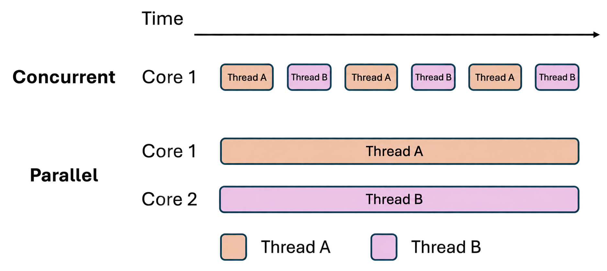
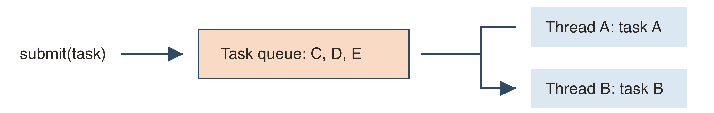

Learning Goals
Distinguish concurrency from parallel execution.
Separate a task from the thread that runs it.
Explain why a shared update can fail.
Choose a coordination or execution tool for the problem.
Handle completion, failure, and cancellation.
Why Use Concurrency?
Keep an application responsive during slow work.
Handle several independent requests.
Use multiple CPU cores for suitable calculations.
Example: load a file while the user keeps working.
Processes, Threads, and Tasks
A process is a running program.
-
A thread is one path of execution inside a process.
Threads share the process heap but keep separate call stacks.
-
A task is work that a thread can execute.
One thread can execute several tasks over time.
Concurrency and Parallelism

-
Concurrency: tasks make progress during overlapping periods.
One CPU core can switch between concurrent tasks.
-
Parallelism: tasks execute at the same time.
Multiple CPU cores can run tasks in parallel.
CPU-Bound and I/O-Bound Work
CPU-bound work spends most of its time calculating, such as processing image pixels.
I/O-bound work spends much of its time waiting for files, network responses, or a database.
While one task waits for I/O, another can use the CPU.
CPU calculations benefit from parallelism only when there are available cores and independent work.
Creating threads, switching between them, and coordinating shared data have costs. More threads do not always mean faster execution.
Representing a Task with Runnable
A functional interface has one abstract method.
Runnabledeclaresrun().A lambda supplies that method's implementation without writing a named class.
A named class is useful when a task needs reuse or extra structure.
class GreetingTask implements Runnable {
@Override
public void run() {
System.out.println("Hello");
}
}
Runnable named = new GreetingTask();
Runnable lambda = () -> System.out.println("Hello");Creating and Starting a Thread
The main thread begins by executing
main().Runnabledefines the worker's task.-
new Thread(task)creates a thread object.Creating the object does not run the task.
-
start()starts the new thread, which executes the task.The current thread can continue while the worker runs.
Each
Threadobject can be started only once.
Runnable task = () -> System.out.println("Hello");
Thread worker = new Thread(task, "Thread A");
worker.start();start() and run()
run()is an ordinary method call on the current thread.start()starts a new thread, which callsrun().The task below runs once on
mainand once onThread A.
Runnable task = () ->
System.out.println(Thread.currentThread().getName());
Thread worker = new Thread(task, "Thread A");
worker.run(); // main
worker.start(); // Thread AThread Scheduling
The scheduler decides which runnable thread executes.
Starting first does not guarantee finishing first.
The output order may change across runs.
A correct program must tolerate valid scheduling changes.
Waiting for Completion with join()
Both workers can make progress after their
start()calls.worker.join()waits until that worker terminates.The final message appears only after both workers finish. This helper passes
InterruptedExceptionto its caller.
static void runWorkers() throws InterruptedException {
Thread first = new Thread(() -> System.out.println("Hello"));
Thread second = new Thread(() -> System.out.println("Bye"));
first.start();
second.start();
first.join();
second.join();
System.out.println("Both finished");
}Example:
threads/ThreadBasicsDemo.java
join() and sleep() Solve Different Problems
join()
Waits for another thread to finish.
Expresses a real completion dependency.
A timed join may return before completion.
static void startAndWait(Thread worker) throws InterruptedException {
worker.start();
worker.join();
}sleep()
Pauses the current thread.
Does not know whether another task finished.
static void pause() throws InterruptedException {
Thread.sleep(100);
}Blocking and Non-Blocking Calls
A blocking call makes the calling thread wait before it can continue.
worker.join()waits for completion.Thread.sleep(100)waits for time to pass.
A non-blocking call lets the caller continue without waiting for the requested work or resource to become ready.
worker.start()does not wait for the worker to finish.Asynchronous execution lets work proceed separately from the caller. That work can still make blocking calls.
Interruption Requests Cooperation
-
worker.interrupt()requests interruption.It does not forcibly kill the worker.
Interruptible waits can throw
InterruptedException.
Task code decides how to respond to the request.
Interruption During a Wait
Interrupt status: a per-thread flag recording that interruption has been requested.
sleep()responds to interruption by throwingInterruptedExceptionand clearing that status.The caller below starts the worker and requests interruption. The task restores the status before returning.
Runnable task = () -> {
try {
Thread.sleep(1000);
System.out.println("Work finished");
} catch (InterruptedException exception) {
Thread.currentThread().interrupt();
return;
}
};
Thread worker = new Thread(task, "Thread A");
worker.start();
worker.interrupt();Example:
threads/InterruptionDemo.java
Interruption During Active Work
A calculation does not automatically throw
InterruptedExceptionwhen interrupted.isInterrupted()checks the current interrupt status without clearing it.Check between small units of work so the task can stop promptly.
Use this task with the same worker creation,
start(), andinterrupt()calls shown previously.
Runnable task = () -> {
long total = 0;
for (long n = 1; n <= 1_000_000_000L; n++) {
if (Thread.currentThread().isInterrupted()) {
return;
}
total += n;
}
System.out.println(total);
};Quick Check: Starting and Waiting
To run a task concurrently with the current thread, call
worker.run()orworker.start()?Answer:
worker.start(). Callingrun()directly stays on the current thread.Is
Thread.sleep(100)a reliable way to wait for a worker to finish?Answer: No. Use
worker.join().If the main thread calls
worker.interrupt(), must the worker terminate immediately?Answer: No. The worker must cooperate, by handling an interrupted wait or checking
isInterrupted()during active work.
Lock Availability and Account Balance
Earlier,
tryWithdraw()returnedfalsewhen funds were insufficient. Now the withdrawal should wait for a deposit.Waiting for a lock: another thread owns the account's monitor.
Waiting for shared state: the monitor is available, but the balance is
20and a withdrawal needs50.Release the monitor while waiting so another thread can deposit.
Thread.sleep(100)keeps any locks the current thread holds.
Waiting for Sufficient Funds
This waiting version,
MonitorBankAccount, starts with20. Itssynchronizedmethod owns the account's monitor.wait()meansthis.wait(), inherited fromObject. It releases this monitor and reacquires it before returning.Recheck the balance in
whileafter every wakeup.Another withdrawal may use the funds first. A spurious wakeup can occur without notification.
class MonitorBankAccount {
private int balance = 20;
public synchronized void withdraw(int amount)
throws InterruptedException {
while (balance < amount) {
wait();
}
balance -= amount;
}
}Deposits and Monitor Notification
Add this
deposit()method to the sameMonitorBankAccount. Thread B deposits40while holding its monitor.notifyAll()wakes all threads waiting on that account.notify()wakes one waiter instead.
Notification does not release the monitor.
Each awakened thread must reacquire the monitor and recheck the balance.
public synchronized void deposit(int amount) {
balance += amount;
notifyAll();
}The deposit raises the balance to 60. Thread A can then withdraw 50.
Example:
coordination/MonitorBankAccountDemo.java
Explicit Locking with ReentrantLock
ReentrantLockadds timed and interruptible acquisition to mutual exclusion.LockingBankAccountuses one shared lock for all account methods.lock()waits for ownership.Reentrant: the owning thread may acquire the same lock again.
Release with
unlock()infinally, even if an exception occurs.
class LockingBankAccount {
private int balance = 20;
private final ReentrantLock lock = new ReentrantLock();
public void deposit(int amount) {
lock.lock();
try {
balance += amount;
} finally {
lock.unlock();
}
}
}Timed and Interruptible Lock Acquisition
tryLock()returns immediately:trueif acquired, otherwisefalse.tryLock(100, TimeUnit.MILLISECONDS)waits at most100milliseconds. Interruption can causeInterruptedException.lockInterruptibly()waits for ownership but allows interruption to end the wait.This alternative to
LockingBankAccount.deposit()returnsfalseon timeout. Unlock only after successful acquisition.
public boolean tryDeposit(int amount) throws InterruptedException {
if (!lock.tryLock(100, TimeUnit.MILLISECONDS)) {
return false;
}
try {
balance += amount;
return true;
} finally {
lock.unlock();
}
}Example:
coordination/LockingBankAccount.java
Waiting for State to Change with Condition
In
LockingBankAccount,fundsis aConditioncreated from the shared lock. It holds the threads waiting for sufficient funds.A withdrawal can proceed only when
balance >= amount.await()releases the lock while waiting and reacquires it before returning. It can throwInterruptedException.Use
whileto recheck the balance after every wakeup.
private final ReentrantLock lock = new ReentrantLock();
private final Condition funds = lock.newCondition();
public void withdraw(int amount) throws InterruptedException {
lock.lock();
try {
while (balance < amount) {
funds.await();
}
balance -= amount;
} finally {
lock.unlock();
}
}Deposits and Condition Signalling
This version replaces the earlier
LockingBankAccount.deposit(). It updates and signals under the same lock aswithdraw().signalAll()wakes all waiters onfunds.signal()wakes one waiter instead.
Signalling keeps the lock. After it is released, waiters reacquire it and recheck the balance.
Every method that adds funds must signal, including
tryDeposit()if it is retained.
public void deposit(int amount) {
lock.lock();
try {
balance += amount;
funds.signalAll();
} finally {
lock.unlock();
}
}Example:
coordination/LockingBankAccountDemo.java
Monitor and Condition APIs
| Operation | Object monitor | Lock + Condition |
|---|---|---|
| Wait and release the associated lock | wait() |
await() |
| Wake one waiter | notify() |
signal() |
| Wake all waiters | notifyAll() |
signalAll() |
Own the matching monitor or lock when calling these methods.
Keep monitor waiters and
Conditionwaiters separate. Use the matching notification methods.
synchronized or ReentrantLock?
For straightforward mutual exclusion,
synchronizedhandles locking and unlocking automatically.For timed or interruptible acquisition, use
ReentrantLock.For separate wait sets on one lock, create multiple
Conditionobjects.Both approaches support waiting for state to change. Waiting alone does not require
ReentrantLock.
Quick Check: Which Waiter Can Proceed?
The balance is 0. Thread A is waiting to withdraw 100. Thread B is waiting to withdraw 20.
A deposit adds 20 and calls notify() once.
Could Thread B remain waiting even though enough funds are available for it?
Answer: Yes. notify() may wake Thread A, which must wait again. notifyAll() lets both recheck, allowing Thread B to withdraw.
Producer–Consumer Handoff
A producer creates file-processing jobs. A consumer takes and processes them.
Like the account balance, queue contents determine whether a thread can proceed.
The producer waits while the queue holds
10jobs and is full.The consumer waits while the queue is empty.
BlockingQueuehandles the locking and signalling for these conditions.put()adds a job, blocking while full.take()removes one, blocking while empty.
static void produce(BlockingQueue<String> jobs) {
try {
jobs.put("report.csv");
} catch (InterruptedException exception) {
Thread.currentThread().interrupt();
}
}Running the Producer and Consumer
The producer runs on
Thread A. The calling thread is the consumer.Both use the same queue. If the consumer reaches
take()first, it waits for the producer's job.The helper passes interruption during
take()orjoin()to its caller.
static void handoff() throws InterruptedException {
BlockingQueue<String> jobs = new ArrayBlockingQueue<>(10);
Thread producer = new Thread(() -> produce(jobs), "Thread A");
producer.start();
String job = jobs.take();
System.out.println("Processing " + job);
producer.join();
}Example:
coordination/BlockingQueueDemo.java
ExecutorService and Worker Threads

The producer–consumer example managed its worker threads directly.
Thread pool: managed workers that reuse threads for successive tasks.
An
ExecutorServiceaccepts task objects and chooses workers to execute them.Executors.newFixedThreadPool(2)allows up to two tasks to execute at a time.Additional tasks wait in the queue while both workers are busy.
Task Results: Runnable and Callable
Runnable.run()performs work but returns no result.-
Callable<T>.call()performs work and returns a value of typeT.call()may declare checked exceptions;run()cannot.
Runnable message = () -> System.out.println("Done");
Callable<Integer> calculation = () -> 6 * 7;Future: A Result That May Arrive Later
Future<T>: a handle to a task result that may not be available yet.submit()submits the task for execution and returns aFuture.get()blocks the calling thread if the result is not ready.Submit independent tasks before waiting for their values.
Try-with-resources closes the executor, waiting for its tasks to finish.
static void totalResults()
throws InterruptedException, ExecutionException {
try (ExecutorService pool = Executors.newFixedThreadPool(2)) {
Future<Integer> first = pool.submit(() -> 6 * 7);
Future<Integer> second = pool.submit(() -> 5 * 5);
int total = first.get() + second.get();
System.out.println(total); // 67
}
}Example:
executors/ExecutorFutureDemo.java
Executor Resource Limits
newFixedThreadPool(2)limits active workers but uses an unbounded task queue.Pending work can exhaust memory if submissions outpace processing.
A bounded queue limits pending work. When full, submissions must wait, slow down, or be rejected.
The component that owns the executor must close it when finished.
close()rejects new submissions and waits for submitted tasks to finish.
What Can Happen to a Future?
Success:
get()returns the result.Task failure:
ExecutionExceptionwraps the task's exception.getCause()retrieves it.Interrupted caller:
InterruptedExceptionconcerns the waiting thread. The method below passes it to its caller.
static void printResult(Future<Integer> future)
throws InterruptedException {
try {
System.out.println(future.get());
} catch (ExecutionException exception) {
System.out.println("Task failed: " + exception.getCause());
}
}Future Timeouts and Cancellation
A timed
get()throwsTimeoutExceptionif the result is not ready in time.A timeout ends this wait. It does not stop the task.
For a
Futurefromsubmit(),cancel(true)requests cancellation and may interrupt the worker. The task must cooperate.After successful cancellation,
get()throwsCancellationException.
static void printWithinDeadline(Future<Integer> future)
throws InterruptedException, ExecutionException {
try {
System.out.println(future.get(100, TimeUnit.MILLISECONDS));
} catch (TimeoutException exception) {
future.cancel(true);
System.out.println("Task took too long");
}
}Example:
executors/FutureTimeoutDemo.java
Results and Stages with CompletableFuture
Future.get()retrieves a result.CompletableFuturealso lets us attach the next computation.A stage is one step in the computation. Attach it now to run when its input becomes ready.
supplyAsync()submits work that produces a value to the given executor.CompletableFuture.join()blocks if needed, then returns the result.Thread.join()instead waits for a thread to terminate.
try (ExecutorService pool = Executors.newFixedThreadPool(2)) {
CompletableFuture<String> message = CompletableFuture
.supplyAsync(() -> "Report ready", pool);
System.out.println(message.join());
}Dependent Work: One Result Feeds the Next
Some work cannot start until an earlier result is ready.
thenApply()transforms the previous stage's successful result.It may run on the completing thread, or the caller if the input is already ready.
Register the transformation without waiting for its input. The function runs once that input is ready.
String::lengthmeanstext -> text.length().
try (ExecutorService pool = Executors.newFixedThreadPool(2)) {
CompletableFuture<Integer> length = CompletableFuture
.supplyAsync(() -> "Concurrency", pool)
.thenApply(String::length);
System.out.println(length.join()); // 11
}Independent Work: Start Both, Combine Later
Submit independent tasks before waiting for either result.
thenCombine()runs its combining function after both results succeed.The lambda receives the user name and order count below.
try (ExecutorService pool = Executors.newFixedThreadPool(2)) {
CompletableFuture<String> user = CompletableFuture
.supplyAsync(() -> "Alice", pool);
CompletableFuture<Integer> orders = CompletableFuture
.supplyAsync(() -> 3, pool);
CompletableFuture<String> summary = user.thenCombine(orders,
(name, count) -> name + " has " + count + " orders");
System.out.println(summary.join()); // Alice has 3 orders
}Example:
executors/CompletableFutureDemo.java
Stage Failure and Cancellation
If an earlier stage fails, its normal transformation steps are skipped.
join()reports task failure with an uncheckedCompletionException, rather than theExecutionExceptionused byget().CompletableFuture.cancel(true)marks the result as cancelled. Unlike theFuturefromsubmit(), it does not interrupt the underlying computation.
JavaFX: Keep Slow Work Off the UI Thread
A file can load in the background while the interface stays responsive.
JavaFX UI updates run on the JavaFX Application Thread.
Submit slow work to an executor. Do not block the UI thread with
Future.get()orCompletableFuture.join().From the background task, use
Platform.runLater()to schedule a short UI update.
Why Virtual Threads?
Our earlier
new Thread(...)calls create platform threads, each tied to an OS thread.A virtual thread is a lightweight thread managed by the JVM.
When a virtual thread waits, the JVM can usually let the platform thread run other work.
This makes virtual threads useful when many tasks spend time waiting on I/O.
One Virtual Thread per Task
newVirtualThreadPerTaskExecutor()creates a virtual thread for each submitted task.Tasks can use ordinary blocking code.
get()waits when we need the result.
static void runVirtualTask()
throws InterruptedException, ExecutionException {
try (ExecutorService executor =
Executors.newVirtualThreadPerTaskExecutor()) {
Future<String> report = executor.submit(() -> {
Thread.sleep(100); // simulate waiting for I/O
return "Report ready";
});
System.out.println(report.get());
}
}What Virtual Threads Do Not Solve
Shared mutable state still needs synchronization.
CPU-heavy work does not become faster just because it uses virtual threads.
Scarce resources still need limits, such as database connections.
In Java 21, blocking while holding a
synchronizedmonitor can reduce virtual-thread scalability.
Example:
executors/VirtualThreadDemo.java
Choose a Tool for the Job
Simple shared state:
synchronized.Waiting on an object:
wait()andnotifyAll()undersynchronized.One shared counter:
AtomicInteger.Extra lock control and separate wait sets:
ReentrantLockandCondition.Producer-consumer handoff:
BlockingQueue.Task execution and results:
ExecutorServiceandFuture.Dependent result stages:
CompletableFuture.Many blocking tasks: virtual threads.
Key Takeaways
A task describes work; a thread executes work.
start()starts a new thread; callingrun()directly does not.Shared mutable state may require both atomicity and visibility.
Mutual exclusion prevents conflicting critical sections from overlapping.
Correctness requires both safety and liveness.
wait()andawait()reacquire their lock before returning. Recheck shared state in awhileloop.Completion, failure, interruption, timeout, and cancellation are part of task design.